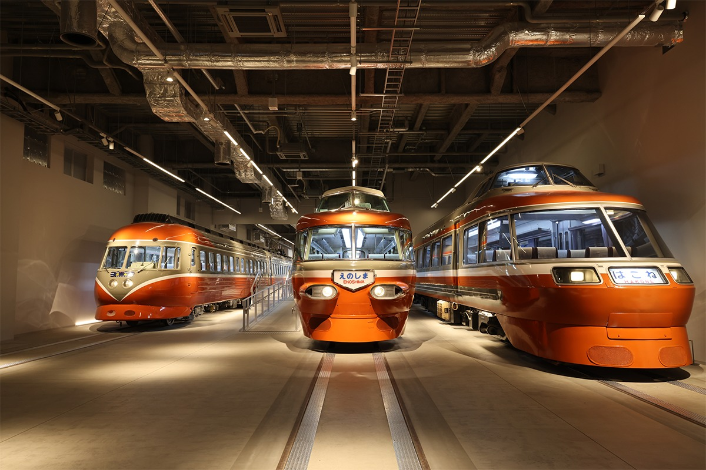
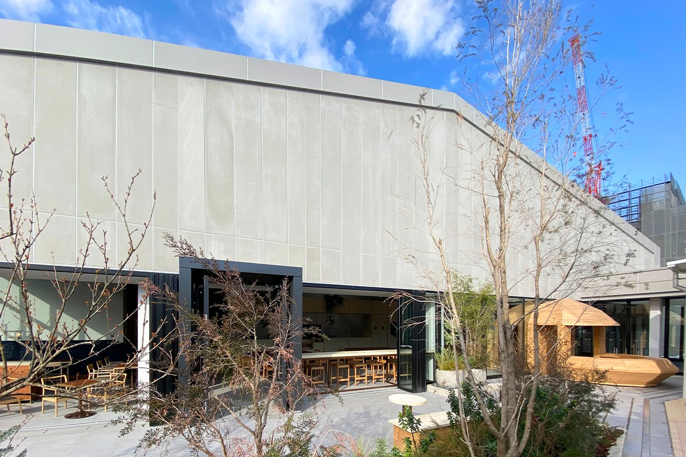
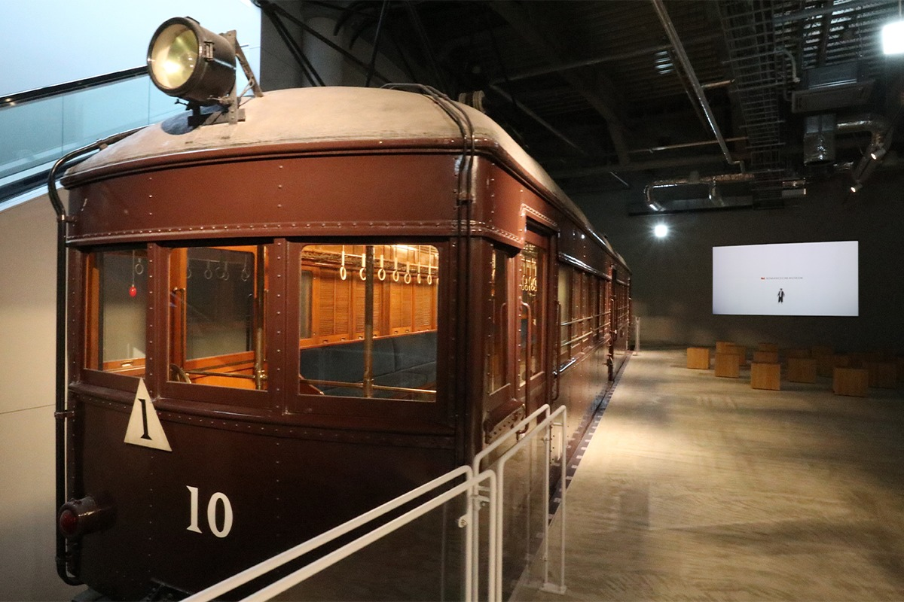
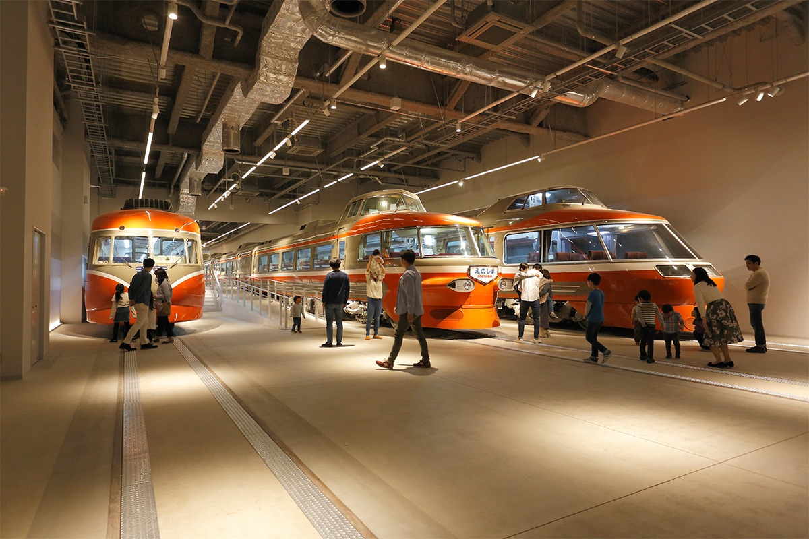
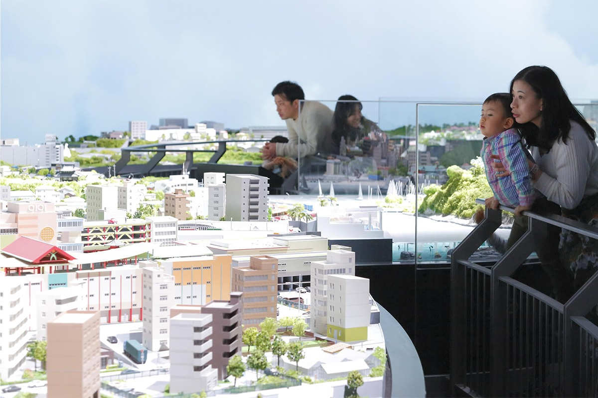
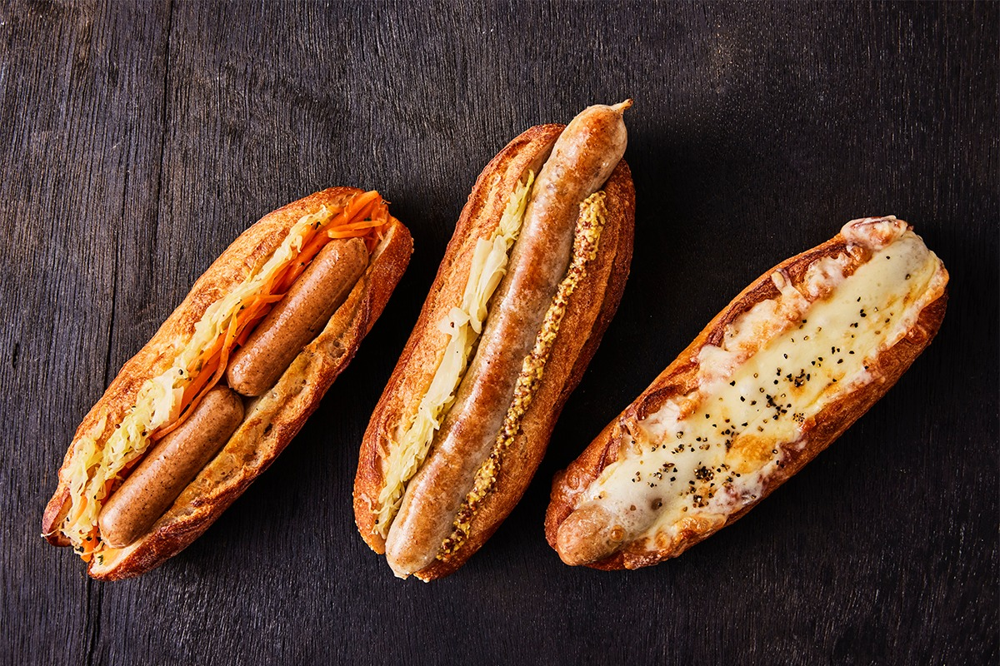
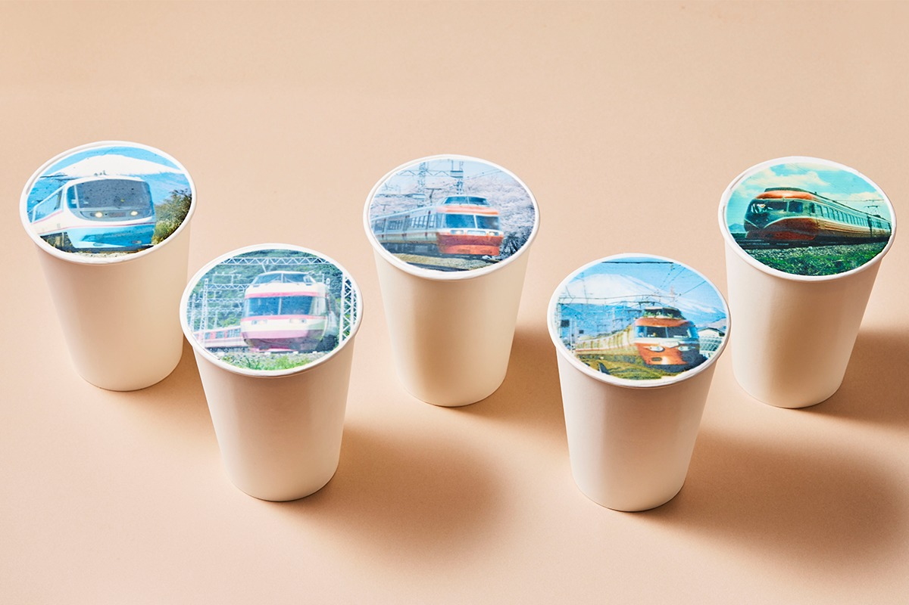
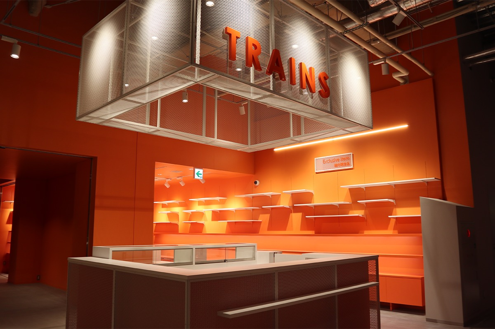

Префектура Канагава · Эбина · музей поездов
Музей «Романскар» в Эбине: экспрессы Одакю, огромная диорама и поезда, в которые можно зайти

Экспрессы «Романскар» железнодорожной компании Одакю любят уже несколько поколений японцев. 19 апреля 2021 года компания открыла у станции Эбина музей, где отслужившие поезда можно рассмотреть вблизи, а некоторые и изнутри.
Музей
Первый крытый музей Одакю
Линия Одакю открылась в 1927 году, а её скоростные поезда называются «Романскар». Музей «Романскар» стал первой постоянной крытой экспозицией компании за всю её историю.
Здание стоит вплотную к станции Эбина на линии Одакю, рядом с депо Эбина и новым кварталом ViNA GARDENS, который в 2021 году ещё строился. Задумка музея простая: чтобы интересно было и детям, и взрослым.

Осмотр начинается с платформы, у которой стоит «Моха 1», вагон времён открытия линии. Здесь показывают фильм об истории компании и её экспрессов: старые улицы городов вдоль линии, редкие снимки и записи того, как разные поколения «Романскара» шли по маршруту.

Галерея
Пять поколений экспрессов в одном зале
Главный зал музея устроен как ремонтное депо. В 2021 году здесь впервые на постоянной основе выставили пять типов «Романскара», которые уже сошли с линии. Поезда стоят рядом, их можно обойти, сравнить форму кабин и окраску, а в некоторые вагоны можно зайти. В 2026 году на сайте музея говорится уже о шести типах поездов в галерее.

Диорама
От Синдзюку до Хаконэ в миниатюре
Одна из крупнейших железнодорожных диорам в Японии повторяет линию Одакю от Синдзюку до Одавары и Хаконэ. Город, горы и море уложены в один пейзаж, и по нему ходят 10 типов «Романскара» и 5 типов обычных пригородных поездов: от давно списанных до тех, что ездили по линии в 2021 году.
Над диорамой устроена терраса, откуда видно весь макет, и там можно не спеша посидеть и посмотреть, как бегут поезда.

Кафе
Клуб для любителей поездов
При музее в 2021 году открылось кафе ROMANCECAR MUSEUM CLUBHOUSE. Название выбрали не случайно: это место встреч для всех, кто любит «Романскар» и линию Одакю, и зайти сюда можно легко, даже просто по пути. В меню продукты из городов вдоль линии и блюда, связанные с поездами.


В 2021 году из-за пандемии в музей пускали только по предварительной записи, и часть экспозиции могла быть закрыта.
Магазин
TRAINS
В музее работает TRAINS, официальный магазин сувениров компании Одакю. Здесь продают модели поездов, игрушки и мелочи с символикой Одакю и «Романскара», а также товары, которые есть только в этом музее.

Музей «Романскар»
- Адрес
- префектура Канагава, Эбина, Мэгуми-тё, 1-3
- Телефон
- +81 46-233-0909
- Часы работы
- 10:00–18:00, последний вход в 17:30, по сезону часы могут меняться
- Выходные
- второй и четвёртый вторник месяца, бывают дополнительные выходные
- Цены / Вход
- взрослые и школьники средней школы 900 иен, школьники младших классов 400 иен, дети от 3 лет 100 иен, до 3 лет бесплатно; часть программ платная
- Как добраться
- рядом со станцией Эбина линии Одакю